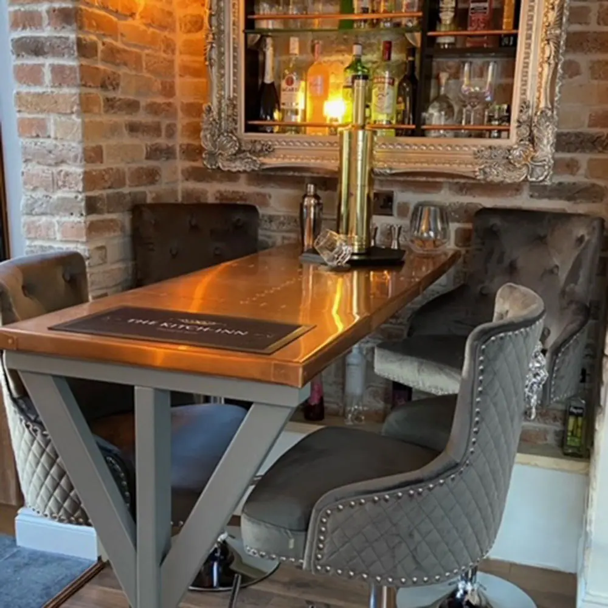
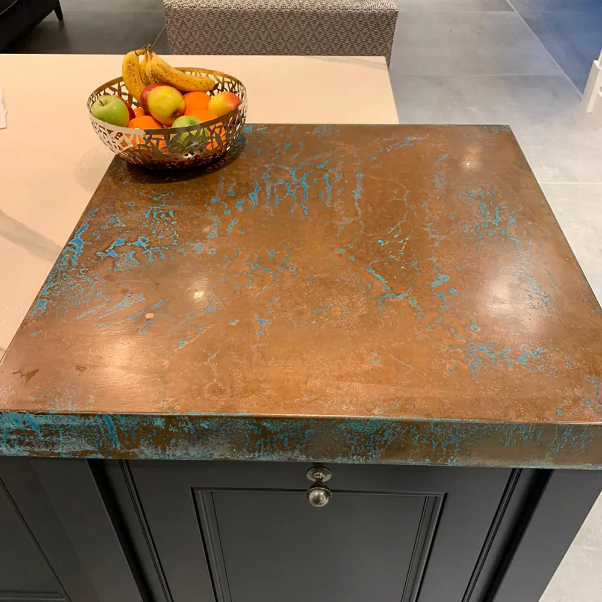

Copper Table Tops
There’s nothing quite like a copper table top to make a statement, draw the eye or complete a design. Whether it’s in the home or in the workplace, the warm patina of copper is universally appealing. It’s also universally timeless. However you use it, whether it’s aged copper or natural copper, there’s a good reason you see it everywhere you go. Because of its warmth, robust nature and flexibility. Available as aged copper or natural copper, our table tops deliver that statement you’re looking for with the practicality you appreciate. All copper table tops are made to order by our craftsmen. They can be aged to the desired colour or patina, cut to size and even made into the tabletop ready to go. Simply contact our team for a quote and we’ll handle the rest!


Cut to size
Each of our bespoke finishes can be purchased in sheets cut to your size, perfect for your project.
- Pricing includes delivery and turnaround time is just 5-8 weeks
- Each piece is coated in a gloss finish lacquer that prevents the sheet from further aging

Ready to go
We can provide bespoke cut metal with each of our finishes being wrapped around wood and lacquer finished. Get in touch for a bespoke quote . If you’re a business please use our Bespoke Quote for Businesses form .
All our copper table tops are made by hand, by craftsmen. Each is designed to deliver lustrous looks with the longevity and reliability you look for in your furniture.
Whether you’re using it in the home or in the workplace, few finishes have the same depth of character as copper!
Those finishes include:
- Oxfordshire finish – Complex mix of colours and textures within an eye-catching patina
- Cheshire finish – Rich aged copper finish with depth and timeless appeal
- Northumberland finish – Rich copper with green verdigris colours throughout
- Natural copper finish – Warmth, comfort and luxury, three feelings natural copper evokes
- Hertfordshire finish –Complex aged copper finish with deep blues and greens
Each piece is designed, created and finished by hand. Aged copper finishes are sealed in a tough lacquer to protect the metal.
HANDMADE COPPER TABLE TOPS
All copper table tops are made to order and built by hand. All begin with a copper sheet.
Aged finishes are artificially aged using specialist processes. Our artisans then stop the ageing when the metal meets your specific patina. That finish is then sealed forever in a tough lacquer and the metal is cut to size.
If you’re ordering just the metal, the sheet is then packed and shipped. We can also build complete copper table tops, wrapping the metal around a wood base in the dimensions you specify.
LOOKING AFTER YOUR COPPER TABLE TOP
One of the most common reasons people like copper tabletops so much is that they are hard wearing and low maintenance.
Simply clean regularly with warm soapy water and a soft cloth and avoid using chemical or abrasive cleaners to preserve the lacquer. That’s it!
We include full care instructions with every copper table you order.
To order your bespoke copper table top, contact our team for a fast, free quote .


If you can dream it, we’ll make it.
Bars, balustrades, staircases, worktops, cladding and pieces that don’t have a name yet. Our designers and craftspeople work in brass, copper, zinc and steel, and alongside wood.